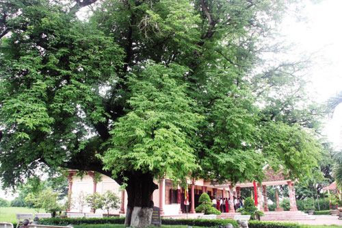
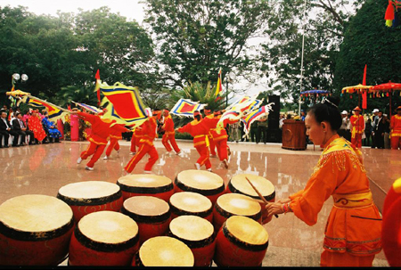
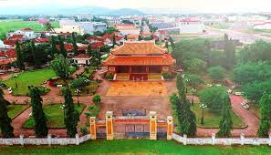
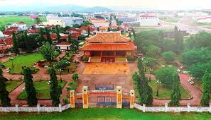

Bảo Tàng Lịch Sử
Bảo Tàng Bình Định
Bảo Tàng Bình Định
Một Số Hình Ảnh


Giới Thiệu
Giá: Miễn phí
Số điện thoại: 02563822452
Thời gian tham quan tại 1 điểm: 30 phút
Thời gian mở cửa: 7:00 SA - 5:00 CH
Email: baotangbinhdinh@gov.vn
Địa chỉ: 26 Nguyễn Huệ, Phường Lê Lợi, Thành phố Quy Nhơn, Tỉnh Bình Định
Bảo tàng Tổng hợp Bình Định tọa lạc trong
Trung tâm thành phố Quy Nhơn, tại số 26 Nguyễn Huệ. Nơi đây trưng bày trên 1.000 tài liệu,
hiện vật đem đến cho du khách cái nhìn vừa khái quát, vừa cụ thể về đất nước, con người Bình
Định qua các thời kỳ lịch sử. Đặc biệt, với hàng trăm hiện vật về nền văn hóa Chămpa độc đáo
đang được lưu giữ tại đây, Bảo tàng được cho là nơi trưng bày, lưu giữ nhiều hiện vật Chămpa
nhất nhì nước ta, trong đó có tâm văn bua khác trên đá đầy bí ẩn mà nhiều nhà nghiên cứu vẫn
chưa tìm ra lời giải đáp hoàn chỉnh.
Bảo tàng được xây dựng từ năm 1980, với
diện tích 3.960m2 được phân làm 3 khu chính: khu trưng bày có diện tích 2.000m2, khối hành
chính và khối lưu niệm. Khu trưng bày trong nhà gồm 5 gian với 5 chủ đề chính: phòng “Đất
nước con người” với 241 hiện vật, phòng “kháng chiến chóng Pháp” với 122 hiện vật, phòng
“kháng chiến chống Mỹ” với 233 hiện vật, phòng “văn hóa Chăm” với 173 hiện vật, phòng “Bác
Hồ với Bình Định – Bình Định với Bác Hồ” với 185 hiện vật.
Ngoài các gian trưng bày trong nhà, các
hiện vật trưng bày bên ngoài khuôn viên, sân vườn đã tạo nên điểm ấn tượng và thu hút du
khách khi tham quan Bảo tàng Tổng hợp. Với lối thiết kế khong gian mở, không đi vào các chủ
đề hay hiện vật cụ thể, rõ ràng mà chỉ là những mảng điểm gợi ý về các loại hình kiến trúc,
điêu khắc mỹ thuật của Bình Định, tiêu biểu như các tác phẩm về điêu khắc Chămpa lớn, tượng
danh nhân Bình Định, tượng mỹ thuật hiện đại, các trò chơi dân gian, làng nghề truyền thống,
tín ngưỡng cổ truyền,… sẽ giúp du khách có những cái nhìn tổng quan về văn hóa Bình Định.
Bảo Tàng Quang Trung
Bảo Tàng Quang Trung

Bảo tàng Quang Trung
Bảo tàng Quang Trung được hình thành trên chính nền nhà cũ của gia tộc Nguyễn Huệ ở làng Kiên Mỹ, ấp Kiên Thành, nay thuộc thị trấn Phú Phong, huyện Tây Sơn, quần thể Bảo tàng Quang Trung – điện thờ Tây Sơn là khu Bảo tàng Danh nhân lớn nhất cũng là một trong những bảo tàng thu hút lượng khách đến tham quan du lịch học tập nhiều nhất trên đất nước ta hiện nay.Tây Sơn Điện trước đây là một đình Kiên Mỹ, được xây dựng vào những năm đầu thế kỷ XIX để bí mật
thờ ba anh em Tây Sơn. Đình ở làng Kiên Mỹ, ấp Kiên Thành, huyện Tuy Viễn, phủ Quy Nhơn - nay là
khối 1, thị trấn Phú Phong, huyện Tây Sơn, tỉnh Bình Định.
Làng Kiên Mỹ là quê hương thứ hai của dòng họ
Nguyễn Tây Sơn ở Đàng Trong. Từ khi về đây, cụ Cụ Hồ Phi Phúc đã góp công sức cùng nhân dân địa
phương tạo dựng làng Kiên Mỹ thành làng chuyên làm nghề thủ công truyền thống kết hợp làm nông
và buôn bán mà đời sông nhân dân trở nên trù phú. Nghề buôn bán trầu cau ở đây rất thuận tiện,
có bến trường trầu bên bờ sông Kôn - nơi tiếp nhận trầu cau từ Tây Sơn thượng đạo chuyển về.
Nguyễn Nhạc sau này có thời gian nối nghiệp cha làm nghề buôn bán trầu cau nên nhân dân thường
gọi là anh Hai Trầu. Ông từng giao lưu buôn bán khắp miền xuôi, miền ngược trên dòng sông Kôn.
Nhờ vậy, Nguyễn Nhạc có điều kiện chiêu hiền, đãi sĩ và khởi xướng phong trào khời nghĩa nông
dân ở vùng Tây Sơn thượng đạo.
Làng Kiên Mỹ cũng là nơi hội tụ các nghĩa sĩ và
là căn cứ đầu tiên của phong trào nông dân ở vùng Tây Sơn hạ đạo. Dưới sự lãnh đạo của ba anh em
Nguyễn Nhạc, Nguyễn Huệ, Nguyễn Lữ mà tiêu biểu là anh hùng bách chiến bách thắng Quang Trung -
Nguyễn Huệ. Người đã đưa phong trào khởi nghĩa nông dân Tây Sơn trở thành phong trào giải phóng
dân tộc, đánh đuổi 5 vạn quân Xiêm và 29 vạn quân Mãn Thanh xâm lược, bảo vệ vững chắc nền độc
lập dân tộc.
Sau khi nhà Tây Sơn mất, triều Nguyễn - Gia Long
lên cầm quyền đã thẳng tay đàn áp, tận diệt những người theo Tây Sơn và dòng họ Tây Sơn. Mặc dù
sự trả thù đó vẫn còn tiếp diễn dưới các triều vua Nguyễn về sau, nhưng nhân dân làng Kiên Mỹ
vẫn một lòng trung kiên, thành kính và biết ơn vô hạn đối với Triệu đại Tây Sơn. Thể hiện niềm
tri ân đối với người có công với nước. năm Minh Mệnh thứ 3 (1823), nhân dân địa phương đã góp
công, của xây dựng ngôi đình làng trên nền nhà củ của ông bà Hồ Phi Phúc để bí mật thờ ba anh em
nhà Tây Sơn, lấy tên là đình Kiên Mỹ.
Ngôi đình nằm trong khu vườn với diện tích
2.323m2 , bên cạnh còn giếng nước và cây me do cụ Hồ Phi Phúc nuôi trồng và tạo dựng nên. Giếng
nước ghép bằng đá ong, không có vữa hồ, là nguồn nước nuôi dưỡng ba anh em trưởng thành. Cây me
là nơi Nguyễn Nhạc họp bàn việc nước với các nghĩa sĩ và cũng là nơi nhân dân bí mật thờ ba anh
em nhà Tây Sơn sau những năm đình bị đốt cháy.
Lúc đầu, đình được xây dựng với kiến trúc theo
kiểu nhà mái lá miền Trung, có diện tích trên 100m2, có tiền đường, hậu tẩm, chất liệu bằng gỗ,
mái lợp tranh, vách đất, có trính cấu, cột lỏng đở các vì kèo đầu chạm long, phụng, cửa bàn pha,
các cây cột ví von: "Hạc chợ đình, cột đình Kiên Mỹ". Sắc phong thành hoàng của triều Nguyễn
không thờ ở đây mà đem thờ ở đây mà đem thờ ở miếu Vĩnh An thuộc xóm Hưng Trung. Như vậy, đình
Kiên Mỹ xưa thờ thành hoàng là danh nghĩa, còn thực chất là thờ ba anh em nhà Tây Sơn. Vì vậy, ở
vùng này có câu ca dao:
Ai
cho miễu lớn hơn đình,
Bậu
có chồng mặc bậu vẫn gọi mình bằng
Nội thất đình được bài trí theo nghi thức đình
làng ở miền Trung. Nhà tiền đường thờ Thành hoàng, nhà hậu tẩm thờ Tây Sơn tam kiệt. Về tổ chức
ban tế lễ gồm có: Chánh bái và phó chánh bái được hội đồng bô lão lựa chọn trong số những người
có học vấn và đức độ để đại diện cho nhân dân cúng tế ở đình. Các học trò gia lễ được ban khánh
tiết cử ra. Tổ chức cúng kỵ vào rằm tháng 11 âm lịch, nhân tết cơm mới hàng năm để kỵ hiệp ba
anh em nhà Tây Sơn, chỉ mật cáo chứ không có văn tế.
Trong chín năm kháng chiến chống thực dân Pháp,
Đình đã bị đốt cháy. Sau đó, nhân dân lập miếu nhỏ dưới góc cây me để thờ ba anh em nhà Tây Sơn.
Cây me cổ thụ đã đi vào tâm thức dân gian với lòng tri ân nhà Tây Sơn sâu nặng:
Cây
me, giếng nước, sân đình
Ơn
sâu, nghĩa nặng dân mình còn ghi.
Sau Hiệp định Giơ-ne-vơ, đất nước tạm thời chi
cắt, chính quyền Ngô Đình Diệm lên cầm quyền ở miền Nam Việt Nam. Nhân dân làng Kiên Mỹ nói
riêng, nhân dân quận Bình Khê (Tây Sơn) nói chung đã góp công, của xây dựng lại ngôi đình ngay
trên nền cũ, chính thức lấy tên là Tây Sơn Điện vào năm 1958. Từ đó, việc thờ cúng ba anh em nhà
Tây Sơn và lễ hội kỷ niệm chiến thắng Ngọc hồi Đống Đa hàng năm đã trở thành ngày hội công
khai.
Tây sơn Điện được kiến trúc theo kiểu chữ đinh,
móng xây đá chẻ, vách xây gạch đặc, mái lợp ngói đúc bằng xi măng, diện tích trên 100m2. Điện
thờ chính có 3 gian, chính giữa thờ Quang Trung HOàng đế - Nguyễn Huệ, bên phải thờ Thái Đức
Hoàng đế - Nguyễn Nhạc, bên trái thờ Đông Định Vương - Nguyễn Lữ, tả hữu điện thờ các quan văn
võ và tiên tổ dòng họ nhà Tây Sơn, tất cả đều có án thờ và trang trí theo kiểu cung đình ở miền
Trung, hai đầu hồi có giá chiêng, trống để phục vụ tế lễ. Điện có ba dòng cửa pa nô bằng gỗ quý,
trên đầu cửa chính điện có ba chữ Tây Sơn Điện, hai bên cửa là câu đối viết bằng chữ Hán:
Tây
khê thảo thụ lưu kỳ tích
Nam
quốc sơn hà ký võ công
Nghĩa
là:
Cây
cỏ suối Tây còn giữ gìn chuyện lạ
Sông
núi nước Nam ghi chép chiến công (của ba Ngài)
Từ điện chính có nhà dẫn dài 6m, rộng 3m, trước
nhà tứ giác, hai bên có hai hàng cột tròn trang trí hoa văn rồng mây quấn quanh cột, được đính
bằng mẻ chai, chén vỡ đủ màu sắc rất uy nghi. Nhà tứ giác mái công, góc mai trang trí những hoa
lá mái rồng, trên chóp có hồ lô thể hiện bầu thánh cứu an dân lành, trong nhà tứ giác có tượng
bán thân Hoàng đế Quang Trung bằng gốm, cao 0,6m, sơn đen đặt trên bục cao 1 m, trước nhà dẫn có
nhà bia hình tứ giác, bên trong đặt một tấm bia xi măng tráng đá mài xanh, nội dung văn bia ca
ngợi thân thế sự nghiệp của ba anh em Tây Sơn. trước cổng điện, cổng chính rộng 6 m, hai cổng
phụ hai bên rộng 1,2m, cao 7m, trên cổng là tấm biển đề ba chữ Tây Sơn Điện, hai bên trụ cổng
chính có câu đối viết bằng chữ Hán:
Phi
thường sự nghiệp bi thiên cổ
Khoáng
thế anh hùng hựu nhất môn.
Nghĩa là: ba anh em Tây Sơn là những bậc anh
hùng hiếm có ở cùng một nhà và đã làm nên một sự nghiệp phi thường tác nên bia đá nghìn đời.
Trên đầu hai trụ cổng chính giữa được trang trí lồng đèn và hai trụ cổng bên ngoài được trang
trí biểu tượng hai ngọn đuốc thể hiện sự tỏa sáng của chính nghĩa Tây Sơn.
Sau khi điện thờ xây dựng xong, tập thể bô lão
địa phương đã bầu ra ban tế lễ gồm: Chánh bái, phó chánh bái và các học trò gia lễ đúng như nghi
thức tiền lệ ở đình làng cũ. Lễ giỗ ba anh em nhà Tây Sơn vào rằm tháng 11 âm lịch gọi là kỵ
hiệp và ngày giỗ trận kỷ niệm chiến thắng Ngọc Hồi - Đống Đa vào ngày mùng 5 tết. Tế lễ được tổ
chức trang nghiêm và có đọc văn tế. Ba mẫu sáu sào ruộng của gia đình Tây Sơn bị Gia Long tịch
thu sung công gọi là ngụy điền Tây Sơn cũng được chính quyền giao lại cho ban quản lý điện thợ
thu hoa lợi phục vụ cúng kỵ.
Sau chiến thắng lịch sử 1975, đất nước được độc
lập, thống nhất, Đảng và nhà nước đã cho phép tỉnh Nghĩa Bình (nay tỉnh Bình Định) xây dựng Bảo
tàng Quang Trung bên cạnh khu di tích Điện thờ. Từ đó, Tây Sơn Điện được giao cho bảo tàng Quang
Trung trực tiếp quản lý. Hằng năm, Bảo tàng phối hợp cùng bô lão địa phương thực hiện các nghi
thức cúng kỵ như tiền lệ.
Trong thời gian quản lý, Bảo tàng đã nhiều lần
tu bổ Điện thờ nhưng không tránh khỏi sự xuống cấp vì Điện thờ quá cũ và chật hẹp, không đủ điều
kiện cho hàng vạn du khách về đây thăm viếng, tưởng niệm trong các ngày lễ, tết. Năm 1998, đáp
ứng lời kiêu gọi quyên góp tiền của để xây dựng lại Điện thờ của UBND tỉnh Bình Định, các nhà
hảo tâm với đạo lý "uống nước nhớ nguồn" đã tự nguyện công đức hàng tỷ đồng để xây dựng lại Điện
thờ. Công trình được khởi công vào tháng 4/1998 và hoàn thành vào cuối năm, kịp phục vụ Lễ kỷ
niệm 210 năm năm chiến thắng Ngọc Hồi - Đống Đa (Mùng 5 tháng giêng, năm Kỷ Mão 1999). Điện thờ
xây dựng lại với kiến trúc cổ, khá quy mô và hoành tráng, tổng điện tích gấp 3 lần so với Điện
thờ cũ, chất liệu bằng bê tông cốt thép, được tái hiện các hàng cột to và trính cấu như đình
xưa, mái đúc bê tông dán vảy mũi hài. Góc mái cong hình mũi thuyền, trang trí hoa văn lá hóa
rồng. Trên nóc Điện được trang trí "Lưỡng long chầu nguyệt" thân hình to khỏe, chân có 5 móng,
vảy đính bằng các loại mảnh sứ và thủy tinh xanh, vàng rất sinh động. Điện có 5 dòng pa nô phủ
màu nâu, trên đầu cửa được chạm trổ hoa văn tùng, cúc, trúc, mai. Trên đầu cửa chính có dòng chữ
"Tây Sơn Điện", hai bên cửa chính có câu đối viết bằng chữ Hán:
Tây
khê thảo thụ lưu huân nghiệp
Nam
quốc sơn hà chấn chiến công.
Nghĩa
là:
Cây
cỏ ở suối Tây còn lưu lại sự nghiệp cao cả
Sông
núi nước Nam chấn động những chiến công.
Trước chính điện có nhà dẫn như điện thờ cũ, hai
bên có hai hàng cột to và trang trí rồng mây quấn quanh cột rất uy nghi, trước nhà dẫn có 1 tấm
bia đá granite màu đỏ, ghi tóm tắt nội dung lịch sử điện thờ. Công điện giữ nguyên như cũ. Di
tích giếng nước được xây nhà che hình lục giác đổ bê tông mái dan ngói vảy, cây me cổ thụ được
tu bổ khang trang hơn trước.
Nội thất được trang trí theo nghi thức cũ, các
án thờ được làm từ gỗ quý, Chạm trổ công phu. Án tiền điện là án công đồng, thờ chung các vị
trong điện và tiên tổ dòng họ nhà Tây Sơn. Án hậu điện, chính giữa thờ Quang Trung Hoàng đế -
Nguyễn Huệ, phía bên thờ Thái đức Hoàng đế - Nguyễn Nhạc, Phía bên trái thờ Đông Định Vương -
Nguyễn Lữ. Hai bên điện thờ các văn võ tướng Tây Sơn. Khi điện thờ mới xây dựng xong chỉ bài trí
các án thờ, đến 2004 được đưa vào 9 tượng thờ bằng gốm sứ dát vàng gồm tượng ba anh em nhà Tây
Sơn và sáu văn võ tướng tiêu biểu là: Thượng thư bộ binh Ngô Thì Nhậm, Trung thư lệnh Trần Văn
Kỷ, Đại tư mã Ngô Văn Sở, Thiếu phó Trần Quang Diệu, Đô đốc Bùi Thị Xuân, Đại tư đồ Võ Văn Dũng.
Mỗi tượng được đặt trên một bệ bê tông ốp đá granite màu đỏ cao 1m, trước tượng là án thờ. Trên
án bài trí tam sơn, đèn, đài, hạc và bát nhang bằng đồng. Trước các thờ công đồng, Thái đức
Hoàng đế - Nguyễn Nhạc, Đông Định Vương - Nguyễn Lữ đặt một cặp lộc bình bằng gỗ cao 1m40 chạm
nổi hoặc khảm xà cừ các tranh ngự, tiều, canh, mục hoạch long, ly, quy, phụng. trước án thờ
Quang Trung Hoàng đế - Nguyễn Huệ đặt cặp hạc đứng trên lưng rùa bằng đồng, cao 1m60. Hàng cột
trước án thợ hậu điện có hai câu liễn khảm xà cừ chữ Hán:
-
Thiên thu công tích huynh hòa đệ
Vạn
cổ anh hùng dân khả vương.
-
Thần võ duy dương kinh quốc tặc
Uy
danh bách thắng độc minh công
Nghĩa
là:
-
Công tích ngàn đời, có công anh lẫn công em
Anh
hùng muôn thuở, từ người dân có thể thành vua.
-
Mỗi lần ra quân, bon giặc nước đều khiếp sợ
Lưng
Danh trăm trận trăm thắng, chỉ một mình Ngài.
Phía trên đàu cột là bức hoành phi bằng gỗ sơn
son thếp vàng, trước án thờ Quang Trung Hoàng đế - long chầu nguyệt, trước án thờ Thái đức Hoành
đế - Nguyễn Nhạc và án thờ Đông Định Vương - Nguyễn Lữ trang trí họa tiết hoa lá hóa rồng. Hai
đầu hồi có hai phòng để giá chiêng và giá trống phục vụ nghi thức tế lễ. Dưới sân điện thờ, ngày
trước nhà dẫn đặt một lư hương bằng đồng to có mái che, hai bên cổng là hai voi đá granite màu
xám, vào bên trong là cặp Kỳ lân bằng đá granite màu đỏ đứng chầu, tất cả đều do các cá nhân có
lòng ngưỡng mộ sự nghiệp Tây Sơn tiến cúng.
Hiện nay, ngoài ngày hiệp kỵ Tây Sơn (15/11 âm
lịch), ngày giỗ trận Đống Đa (mùng 5 tháng giêng âm lịch), còn có ngày kỵ Quang Trung Hoàng đế
(29/7 âm lịch). Trong các ngày này, bảo tàng Quang Trung cùng ban nghi lễ điện thờ long trọng tổ
chức cúng kỵ theo nghi thức truyền thống. Cán bộ cùng nhân dân địa phương tập trung về dự rất
đông. Riêng Lễ hội kỷ niệm chiến thắng Ngọc Hồi - Đống Đa đã có hàng vạn du khách khắp nơi về dự
và thăm viếng điện thờ, cây me cổ thụ, giếng nước gia đình Tây Sơn như về cội nguồn, về nơi địa
linh nhân kiệt để thắp hương tưởng niệm, tri ân những người đã có công với đất nước với dân tộc.
Điện Tây Sơn dù đã trải qua bao năm tháng nhưng vẫn được nhân dân địa phương bảo tồn và phát huy
giá trị nhằm thỏa mãn đời sống tâm linh của mọi người. Với ý nghĩa đó. Điện Tây Sơn đã được Bộ
Văn hóa công nhận là di tích lịch sử - văn hóa quốc gia.
2. Bến sông, cây me, giếng nước
.jpeg)
3.Cây Me ở Bảo tàng Quang Trung - Tây Sơn: Được công nhận là cây Di sản Việt Nam. 
4.Nhạc, võ, hai trong một

Bảo tàng Quang Trung là bảo tàng duy nhất ở nước ta có một đơn vị nghệ thuật chuyên nghiệp trong biên chế của mình, chuyên biểu diễn nhạc, võ.
Di Tích Lịch Sử
Đàn Tế Trời Đất
Đàn Tế Trời Đất
Giới Thiệu về Đàn Tế Trời Đất
Đàn tế trời Đất Tây Sơn hay còn được gọi là Bảo Sơn Thiên Ấn là một khu di tích tâm linh được xây dựng vào năm 2012. Để kỷ niệm 220 năm ngày mất của vua Quang Trung (1792 – 2012) trên núi Ấn Sơn, UBND tỉnh Bình Định đã làm lễ dâng hương và chính thức đưa vào hoạt động công trình Đàn Tế Trời Đất tại núi Ấn Sơn, thuộc thôn Hòa Sơn, xã Bình Tường, huyện Tây Sơn, cách thành phố Quy Nhơn khoảng 55km về hướng tây bắc.

Cách Di Chuyển
Xuất phát từ ngã ba Đống Đa Quy Nhơn bạn di chuyển theo đường Trần Hưng Đạo hướng về đường Đào Tấn. Sau đó sẽ đến chân cầu vượt, tại đây bạn sẽ rẻ qua QL19 rồi đi thẳng đến Tây Sơn. Dọc đường bạn cũng sẽ có thể ghé qua Hầm Hô nhé.
Kiến trúc Đàn Tế Trời Đất
Đàn tế trời tọa lạc ở trên đỉnh cao nhất của Ấn Sơn thuộc dãy Hoàng Sơn cao hơn 364 m so với mực nước biển. Có cấu trúc 3 tầng, tầng trên cùng hình tròn gọi là Viên Đạn, có đường kính 27m, tượng trưng cho Trời, lan can đá có màu đỏ bao quanh, một lối lên từ hướng Nam có 5 bậc, chính giữa Viên Đạn đặt sập đá và nhang án đá là áng thờ Trời – Đất.

Tầng thứ hai là Phương Đàn, cấu trúc hình vuông kích thước 54mx54m, tượng trưng cho Đất có lan can đá màu vàng bao quanh, 4 lối lên mỗi lối 9 bậc theo 4 hướng Nam, Bắc, Đông, Tây. Nơi đây khi làm lễ sẽ bố trí các áng thờ thần như: Thần mặt trời, mặt trăng, các thần biển, sông, núi,… Tầng dưới cùng cũng cấu trúc hình vuông được xây bao quanh có 4 lối vào theo 4 hướng

Nằm bên phải Đàn tế là khu Đền Ấn gồm 3 phần: Tiền tế có kiến trúc mặt bằng chữ Nhất, 5 gian, mái chái, có đầu đao. Nhà Tiền tế có bàn thờ chung các tướng lĩnh và quân sĩ thời Tây Sơn.
Tiếp theo là Phương Đình, là nơi tượng trưng cho sự thông thiên, giao thoa giữa Trời và Đất, giữa Âm và Dương. Ở đây bạn sẽ thấy được bản sao của Ấn lệnh nhà Tây Sơn.

Trong cùng là Hậu cung với 3 gian, là nơi để bài vị cúng bàn thờ của 3 anh em Nguyễn Nhạc, Nguyễn Huệ, Nguyễn Lữ. Phía trước cổng Tam quan ngoài cùng của trục chính là một hồ nước hình bán nguyệt vừa tạo phong thủy cho hướng chính điện vừa là điểm nhấn của khu di tích. Ngoài hồ nước còn có một “nghi môn ngoại” như cổng giữa 2 thế giới tâm linh và trần thế.

Ngoài ra, xung quanh khu Đàn tế còn có Nghi môn, Bình phong, Nhà Bắc thủ công, Nhà chiêng – Nhà trống, Rùa đá, Trụ cờ… nhất là Tháp Báo thiên 7 tầng sừng sững giữa núi non hùng điệp.

Những việc phải làm khi thăm Đàn Tế Trời Đất
Một khi đã đến với Bảo Sơn Thiên Ấn thì làm sao có thể bỏ qua việc dâng hương ở Đền và thắp một nén nhang thờ Trời Đất trên tầng Viên Đàn được, cảm giác linh thiêng giữa một khung cảnh hùng vĩ, chắc chắn sẽ khiến bạn choáng ngợp đấy nhé.
List Những Hình Ảnh đẹp Của ĐÀN TẾ TRỜI ĐẤT
Những hình ảnh di tích lịch sử đẹp ở Bình Định
Hình Ảnh Di Tích Lịch Sử


 
